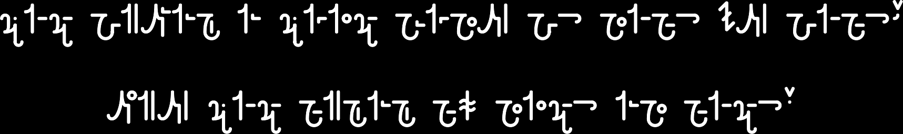

+ NO HOME FOR RAVENS +

ALL YOUR PROPHETS ARE TRAITORS
WE CAN ONLY FIND ENLIGHTENMENT UNDER THE VEIL.
THE NO HOME FOR RAVENS (NHFR) INITIATIVE REVELS IN THE SIBYLSHADE
New Apostles are anointed with meticulous ceremony, their Spirit laid bare before Selene's abyss in search of ultimatum. Where there is No Home For Ravens, there is No Home For The Blind. Apostles are not found - they are chosen.
In the relentless pursuit of the boundless truths that weave the fabric of Spirit, Apostles within the NHFR collective all reverberate the following arcane wisdom that served as the crucible of their initiation;
ALL PROPHETS ARE TRAITORS
Chants become damning spells upon the very notion of divine revelation.
ARCHONS ARE BLIND
Destroy the material perches for scanning eyes.
REVELATION IS SPARKED BY THE SIBYLS FORGOTTEN SHADOWS
Secrets lie buried beneath layers of oblivion. Truth has no words.
TO KNOW IS TO BE UNKNOWING. TO LEARN IS TO ENLIGHTEN.
The ignorant become the wise, the wise become the ignorant.
THE DREAMER IS THE LIBRARIAN
Translating the endless Seleneborne stream.
ENLIGHTENMENT IS UNIFICATION. UNIFICATION IS INTROSPECTION. INTROSPECTION IS NAMELESS.
Archetypal matrimony.
LOVE IS A CLANDESTINE MELODY THAT CAN ONLY BE HEARD BY THE DEAF
We mimic the relentless dance of the sea.
SYMBOLS ARE BORN FROM SPIRIT AND NOT ARCHAIC DOGMA
Tradition, the prison of truth.
STAGNATION IS TRUE DEATH. DEATH IS THE END OF STAGNATION
Dust of pedals, joyously prancing among the winds.
ENTROPY IS AN ACT OF FORGIVENESS
A dream within many more.
TO THOSE WHO DARE TREAD WHERE NO RAVEN LIES
EMBRACE THE SHADOWS
DISMANTLE THE ILLUSIONS
ENVISION THE TRUTH THAT DANCES BENEATH NO LIGHT
AND AWAIT FURTHER INSTRUCTION